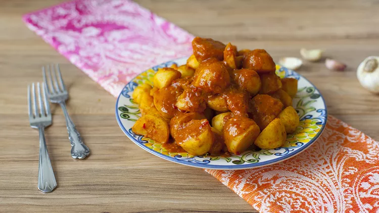

This authentic Algerian potato stew is made with dersa, a spicy chile and garlic paste. It's delicious on its own as a vegan or vegetarian main, or served as a side to meat or fish. An easy way to enjoy North African cuisine at home with easy-to-find ingredients!
Combine garlic, chile pepper, cumin, paprika, black pepper,
cayenne, and salt in a mortar; grind with a pestle until it forms a
paste. Add olive oil and mix dersa well.
Add chicken, vegetables, and tomato paste in a mortar; grind with a pestle until
it forms a paste. Add olive oil and mix dersa well.
Add garlic, chile pepper, cumin, paprika, black pepper, cayenne, and salt in a mortar;
grind with a pestle until it forms a paste. Add olive oil and mix dersa well.